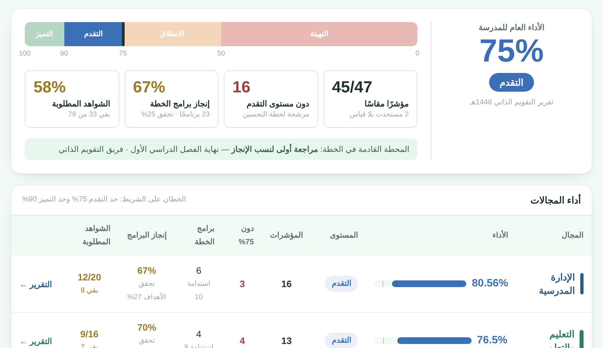
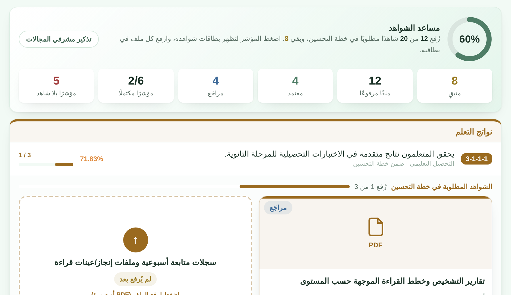
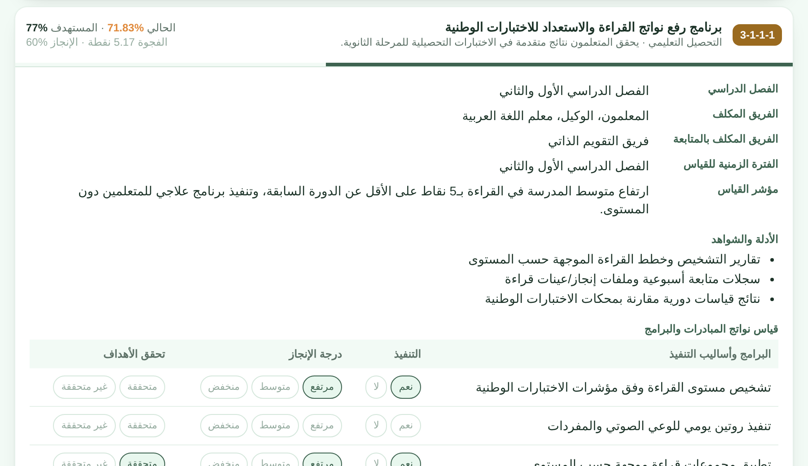
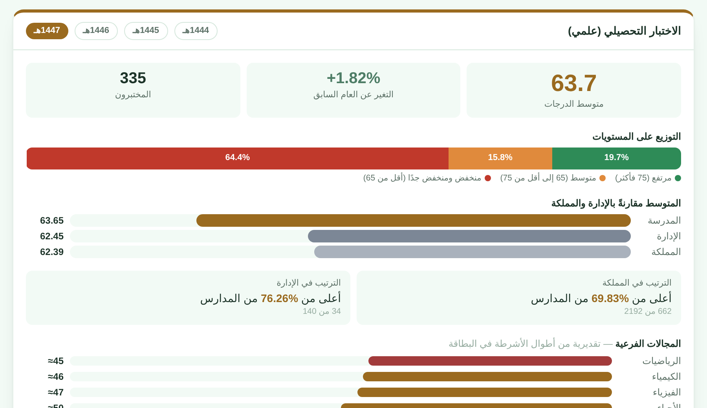

بوابة مكة الثانوية الرقميةمدرسة مكة الثانوية
جديد في البوابة · للجنة التميز
تديره لجنة التميز على مؤشرات دليل هيئة تقويم التعليم والتدريب، من التقويم الذاتي حتى التقويم الخارجي
الأداء العام على مستويات الدليل، والمجالات الأربعة، وأولويات التحسين من الأدنى.
بطاقة جاهزة لكل شاهد مطلوب يُرفع ملفه فيها، ونسبة الإنجاز والمتبقي لكل مجال.
برنامج لكل مؤشر دون المستهدف، بفريقه ومؤشر قياسه، ومتابعة تنفيذ بنوده وتحقق أهدافها.
بطاقات الهيئة لكل عام، والمقارنة بالإدارة والمملكة، وقياس التقدم على خط الأساس.
يرى كل عضو مجالاته وحدها ويرفع شواهدها، ويصله تذكير بما بقي منها.
تقرير لكل مجال، وتقرير عام للجنة، وخطة التحسين بهوية التقارير والتوقيع والختم.

لوحة الأداء وأداء المجالات

مساعد الشواهد ورفعها

برنامج الخطة وقياس نواتجه

الاختبارات الوطنية عبر الأعوام